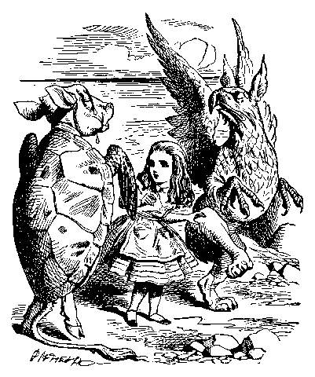

2 LOGIC IN RETROSPECT
2.1 Meta-Logical Reflections on Lewis Carroll’s “What the Tortoise Taught Achilles”
I tell how there may be a better wilderness of logic than of inconsequence. But the logic is backward, in retrospect, after the act. It must be more felt than seen ahead like prophecy. The figure a poem makes. It begins in delight and ends in wisdom. — Robert Frost, “The Figure a Poem Makes” (1939)
In this chapter, we wish to draw some lessons from Lewis Carroll’s classic logical parable “What the Tortoise Taught Achilles”. These lessons, or retrospective reflections, shed light on the experience of learning logic, the epistemology or foundations of logical truth, and about the aesthetics, and art, that inspires many-splendored branches of logic.
When students struggle to learn a system of logic for the first time, they may experience a clutter of disconnected details that can be confusing, even chaotic. But, if they persevere if they continue to exercise their power of analysis, out of this chaos there may emerge a synthesis, the experience of a constellation of mutually supporting ideas coming together, reducing cognitive entropy, and forming cognitively pleasing patterns of information, a grand synthesis, the reveals the beautiful symmetries of logical laws within and a conceptual tool for mapping the starry heavens above.
One of the most well-known descriptions of this experience, or phenomenology, of learning, as experienced XXX by mathematicians and logicians, was recorded by the French mathematician and physicist Henri Poincaré (1854 - 1912):
- Just at this time I left Caen, where I was then living, to go on a geologic excursion under the auspices of the school of mines. The changes of travel made me forget my mathematical work. Having reached Coutances, we entered an omnibus to go some place or other. At the moment when I put my foot on the step of the idea came to me, without anything in my former thoughts seeming to have paved the way for it, that the transformations I had used to define the Fuchsian functions were identical with those of non-Euclidean geometry. I did not verify the idea; I should not have had time, as upon taking my seat in the omnibus, I went on with a conversation already commented, but I felt a perfect certainty. On my return to Caen, for conscience’ sake I verified the result at my leisure.
This characteristic cycle of preparatory intellectual struggle, creative pause, and sudden illumination was experienced by Poincare time and again, and so he proposed an explanation: “Most striking at first is this appearance of sudden illumination, a manifest sign of long, unconscious work.” The initial intellectual struggle, which appeared to bear no fruit, in fact planted the seeds of a cognitive puzzle with sufficient clarity so that the unconscious mind, like a computer program, could continue to search for a solution in the background, not actively presented to the conscious mind.
Learning logic follows a similar progression, with different levels of processing: (1) there is the mechanical level at which you learn the syntax, the formatting, the order of executing steps when constructing a derivation; (2) there is the level of understanding the meaning of the rules of inference and the forms of derivation; (3) there is the intuitive level in which you grasp, or have insight into, the flow of the entire derivation from beginning to end with one “fell swoop” of the mind. This intuition cultivates logical insight into the crux of logical problems, it cuts the Gordian knot by reducing cognitive entropy and producing kind of intellectual pleasure, characteristic of logical and mathematical inquiry.
There is also a perverse kind of philosophical delight in meta-logical insights into Carrollian nonsense, which becomes a kind of parody of sense when seen through the lens of symbolic logic. Like the Doubting Tortoise of “What the Tortoise Taught Achilles,” logicians seem to take a perverse delight in contemplating logical paradoxes, which fascinates the logical mind, in a manner similar to how optical illusions are fascinating to one’s perceptual faculties.
The Cambridge mathematician G. H. Hardy (1877 – 1947) wrote his classic essay A Mathematician’s Apology. An apology is a justification or defense. Plato’s Apology is a dialogue about his teacher Socrates’s apology or defense of the philosophic way of life. Hardy is credited with reforming (or deforming) mathematical by adhering to standards of rigor characteristic of German mathematics and for promoting the conception of pure, as opposed to applied, mathematics. IN his Apology, Hardy boasted:
- I have never done anything “useful”. No discovery of mine has made, or is likely to make, directly or indirectly, for good or ill, the least difference to the amenity of the world.
The boast was premature: the Hardy-Weinberg principle is useful in population genetics and the Hardy-Ramanujan asymptotic formula was used by Niels Bohr to find quantum partition functions.
Hardy was a peculiar sort of atheist. According to one story, he once set out a postcard announcing his discovery of a proof of the Riemann hypothesis as “travel insurance” before crossing the North Sea, reasoning perversely that God would not let him die with the glory of having be thought to have “solved” this most famous of open mathematical problems.
A confirmed bachelor, with a few close friends, and platonic relationships with young men who shared his interests—especially mathematics and cricket. In an interview by the mathematician Paul Erdős, Hardy unhesitatingly replied that his greatest contribution to mathematics was the discovery of Ramanujan, which he said in a lecture was ” … the one romantic incident in my life”.[7]2 One of Hardy’s associates was Bertrand Russell. Hardy wrote objecting to Bertrand Russell dismissal from Cambridge as a consequence of his pacificism and criticism of British politicians for involving Great Britain in World War. Russell’s punishment was not that severe insofar as he was able to write while in jail The Principle of Mathematics, which he dedicated to this mistress Lady Ottoline Morrell.
Hardy fascination with proof surpassed his interest in friendship with persons. Hardy once told Bertrand Russell “If I could prove by logic that you would die in five minutes, I should be sorry you were going to die, but my sorrow would be very much mitigated by pleasure in the proof”.[29] A junior colleague C. P. Snow, a research physicist turned novelist of English literature and noted for his lecture “The Two Cultures and the Scientific Revolution” (1959), suggested that Hardy write this essay as way to stave off suicidal depressionl) wrote his classic apology or justification for the mathematician’s life. The film The Man Who Knew Infinity is about the Indian mathematical genius and mystic Srinivasa Ramanujan, whom Hardy discovered and collaborated with calling this episode the “one great romance” of his life.
Ono of the memorable quotations from A Mathematician’s Apology concerns beauty:
- The mathematician’s patterns, like the painter’s or the poet’s, must be beautiful, the ideas, like the colours or the words, must fit together in a harmonious way. Beauty is the first test: there is no permanent place in the world for ugly mathematics.
Logic, like light, is composed of many difference colors—in fact, it when logic when projected through the critical prism of analysis, reveals a rainbow or spectrum of logics—one shading into another. Just as light reveals the bluest blue, the reddest red, the greenest green, the light of logic reveals logic with paradigmatic focus—the logic of propositions, the logic of quantifier and predicates, the logic of identity and descriptions, the logic of relations, the logic of modality, the logic of time, the logic of logic or meta-logic.
As the seasons are changing, you’ll witness the changing colors of the leaves, the shortening of the march of the sun across the sky, the unique and intricate symmetries of a delicate snowflake. These are symmetries and patterns you can see with the naked eye. But you have also witnessed that there is a rhythm and pattern to logical thought—patterns not always visible to the naked eye but revealed by the eye of analysis. Among these patterns are the laws of logic.
But are the laws of logic true? Are they universal for all rational minds—at all times, in all cultures, in every conceivable possible world? Is there a bottom or foundation, to all this logical thinking—some foundational a priori truths, or is there no bottom—that the world that rests on the back of a elephant standing on a tortoise. On what does the tortoise stand—or it is “tortoises all the way down”?
In his classic logical parable “What the Tortoise Taught Achilles” [1895], Lewis Carroll (the penname of Charles Dodgson discovered a logical paradox about justifying laws of logic.
Carroll borrows two characters from Zeno’s famous paradoxes of motion—Achilles and the Tortoise. In Zeno’s paradox, Achilles, the swiftest of all runners can never overtake the Tortoise, who has a head start. Why? Achilles must read the Tortoise’s starting point, by which time the Tortoise has moved ahead, producing a second starting point that Achilles must reach before, overtaking the Tortoise, by which time the Tortoise have again inched ahead, and so on ad infinitum. Achilles, to overtake the Tortoise, must therefore traverse an infinite series of points in a finite amount of time, which, according to Zeno, is impossible.
Carroll transports these characters into a dialogue about justifying the laws of logic. Achilles is a dutiful student, ready to write down what the Tortoise, a teacher with a fondness for paradox, dictates.
Originally publishes in Mind in 1895, and since that time, Carroll’s puzzle—like Alice in Wonderland and Through the Looking Glass—has become something of a minor classic among philosophers of logic. Philosophers have perennially been drawn to intriguing parable as a source of inspiration for philosophizing about the nature of logic.
Gilbert Ryle [1950] and Stephen Toulmin [1953] appealed to the parable to attack the hypothetico-deductive model of science, according to which scientific predictions are deduced from universal hypotheses together with empirical observation statements.
Willard van Orman Quine [1936] in “Truth by Convention,” his famous attack on the Rudolf Carnap’s thesis of conventionalism in logic cites Carroll’s parable. Turning the tables on Quine, Saul Kripke in a series of lecture and a recent on-line seminar, attended by logicians from all over the world, famously used Carroll’s parable in lectures to attack Quine’s empiricist thesis concerning the revisability of logic.[1]
The logician Hao Wang [1987, pp. 203-204], a chronicler and colleague of the most famous 20th century logician Kurt Gödel, uses Carroll’s parable to illustrate and explain the distinction drawn by Gödel between intuition and proof.
There is probably not one, and only one, clear and unambiguous lesson to be learned from Carroll’s parable. It is likely that Carroll himself was puzzled by his discovery and used his dialogue to express a problem that he intuitively felt but could not adequately articular. Indeed, when pressed by the editor of Mind to explain his point, Carroll seemed to be at a loss and replied by simply iterating his paradox.
What actually takes place in Lewis Carroll’s parable? At the end of Zeno’s famous paradox, Achilles and the Tortoise pause for a paradoxical chat. This time the paradox is not about the impossibility of motion, but about the impossibility of justification in logic.
Imagine Achilles as the dutiful, but somewhat confused, logic student, and the Tortoise as a perversely humorous, but persistently ingenious philosophical soul with a fondness for paradox.
The Tortoise poses a logical argument for Achilles to consider about an equilateral triangle.
The argument is this: The two sides A and B of the triangle are congruent to a third side C.; therefore, sides A and B are congruent to each other.
Let’s symbolize this argument by first introducing a dictionary:
P : sides A and B of the triangle are congruent to the third side C.
Q : sides A and B are congruent to each other.
The Tortoise’s argument can be symbolized:
(1) If P, then Q
(2) P
(3)∴ Q
The Tortoise points out that a skeptic object to the argument in one of two ways: (1) he can object to the truth of the premises, or (2) he can reject the validity of the argument.
The Tortoise declares himself to be skeptic of the second sort—in other words, he grants the truth of the premises, but rejects the validity of the inference. He challenges Achilles to catch him in a contradiction. But this is easy, isn’t it? The argument is simply an instance of modus ponens. In other words, the Doubting Tortoise is skeptical about modus ponens and challenges Achilles to prove that’s illogical—that is, the Tortoise challenges Achilles to logically convict him of being illogical!
The Tortoises argument is, of course, an instance of the now the inference rule known as modus ponens:
ϕ → ψ
ϕ
ψ
[MP for Modus Ponens]
Here, for sake of emphasis, we may strengthen the parable slightly. Let’s assume that the Tortoise not only rejects modus ponens but adopts the following rule of inference:
ϕ → ψ
ϕ
~ψ
[MTo for Modus Tortoise]
Can the Tortoise consistency get away with this logical heresy?
Achilles dutifully proceeds. Since Tortoise accepts the truth of the premises (P → Q) and P, he must also accept their conjunction:
(4) (1) ∧ (2).
Achilles asked the Tortoise if he accepts the conditional that if both (1) and (2) are true, then somuchy (3) be true. The Tortoise, to Achilles’s surprise, grants this conditional is also true:
(5) (1) ∧ (2) → (3)
Achilles cries, “Eureka!” thinking he’s snared the wily Tortoise in an inconsistency: from
(5) (1) ∧ (2) → (3)
(4) (1) ∧ (2)
Achilles infers:
∴ (3)
by modus ponens! “Gotcha!” But the Tortoise begs to disagree, for he infers:
∴ ~(3) by modus tortoise!
Achilles doggedly pursues his line of argument. He convinces the Tortoise to accept the conjunction of (4) and (5),
(6) (4) ∧ (5)
as well as the conditional premise:
(7) (4) ∧ (5) → (3)
But the problem persists: Achilles inference (3) by modus ponens, but the Tortoise infers ~(3) by modus tortoise.
Carroll, like the dutiful Achilles, repeats the pattern a few more times for those the flat-footed, like Achilles, who have no nose for logical paradox. The Tortoise concedes:
(8) (6) ∧ (7)
(9) (6) ∧ (7) → (3)
But stubbornly infers
∴ ~ (3) by modus tortoise.
The infinite regress of logical justification, like the logical regress of Zeno’s paradox of motion, has only just begun!
Many lessons have been drawn from Lewis’s paradox of logical ustification. Before I drawn three such lessons, we’re well-advised to recall Lewis Carroll’s remarks about lessons in Alice In Wonderland, where alice is talking with the Gryphon, and the Mock Turtle. The Gryphon remarks:

“I went to the Classical master, though. He was an old crab, he was.”
“I never went to him,” the Mock Turtle said with a sigh. “He taught Laughing and Grief, they used to say.”
“So he did, so he did,” said the Gryphon, sighing in his turn; and both creatures hid their faces in their paws.
“And how many hours a day did you do lessons?” said Alice, in a hurry to change the subject.
“Ten hours the first day,” said the Mock Turtle: “nine the next, and so on.”
“What a curious plan!” exclaimed Alice.
“That’s the reason they’re called lessons,” the Gryphon remarked: “because they lessen from day to day.”
I shall draw three lessons—the first two based on formal logic and metalogic and the third more philosophical, with echoes of the Socratic paradox of learning from Plato’s dialogue the Meno—but I don’t mean for the lessons to “lessen” in their logical or philosophical cogency.
In an article, ’If’, ‘So’, and ‘Because’ the Oxford philosopher Gilbert Ryle [1950] used Carroll’s parable to deny one of the most important features of what was known as the hypothetical-deductive model of scientific explanation, namely, the requirement that universal hypotheses be included in the premises of explanatory arguments. Universal hypotheses, argued Ryle, do not act as premises in our explanations, but as inference licenses or inference tickets. Ryle explains:
…the Tortoise proved to Achilles…(the) principle of an inference cannot be one of its premises or part of its premiss. Conclusions are drawn from premisses in accordance with principles, not from premisses that embody those principles…. In saying ‘q because p’ we are not just asserting but using what is expressed by “if p, then q”.
Stephen E. Toulmin, in his Introduction to the Philosophy of Science [1953], endorsed Ryle’s lesson:
It is the same with the laws of nature. The conclusions about the world which scientists derive from laws of nature are not deduced from those laws, but rather drawn in accordance with them or inferred as applications of them….
These are powerful lessons to be drawn from such a short parable. Let’s write it down:
Lesson 1. No inference rule can be eliminated in favor its corresponding logical law.
Two questions can be asked: (1) what exactly is their thesis? (2) is it true?
In order to make a reality (something concrete so to speak) out of something that might otherwise be too vague, I shall reason about a specific formal system, namely, the natural deduction system of chapter 1 in KM2. Here I use the word “vague”, rather than “abstract”, in opposition to what is precise. By now, you realize that abstraction can be quite precise and real.
First, we note that the logical connectives {∧, ∨, ↔︎} of Chapter 2 of Kalish, Montague and Mar’s Logic: Techniques of Formal Reasoning (hereafter, KM2) could have been defined in terms of {~, →} the logical connectives of Chapter 1:
(ϕ ∧ ψ) := ~(ϕ → ~ψ)
(ϕ ∨ ψ) := (~ϕ → ψ)
(ϕ ↔︎ ψ) := ((ϕ → ψ) ∧ (ψ → ϕ)) ≡ ~((ϕ → ψ) → ~(ψ → ϕ))
Hence, we can, therefore, reduce the full propositional logic of Chapter 2 to the conditional logic of Chapter 1 via these definitions. Perhaps the exercises of Chapter were more elaborate, but logically speaking, everything we can accomplish logically in Chapter 2 can, by definitional reductions, already be accomplished using the natural deduction system of Chapter 1.
The natural deduction system of Chapter 1 consisted of 4 inference rules and 3 forms of derivation. Can this logical system be simplified even further? Yes. For example, the rule of repetition is eliminable without loss of logical power: it can be replaced by showing ϕ → ϕ and applying modus ponens, or by two applications of double negation. In fact, we can replace all the inference rules, other than modus ponens, with the following set of logical laws:
(MT) (ϕ → ψ) → (~ψ → ~ϕ)
(DN) ~~ϕ → ϕ
(DN) ϕ → ~~ϕ
It happens that these three laws can be reduced to the converse law of MT:
(MTc) (~ ϕ → ~ ψ) → (ψ → ϕ)
These proofs are exercises at the end of Chapter 1. Therefore, the moral drawn by Ryle, and seconded by Toulmin, is too strong since logical inference rules can be eliminated without any loss of derivational theorem, by adopting the corresponding logical laws. However, Ryle and Toulmin, are partially correctly since not all logical inference rules can be eliminated for otherwise, we would not be able to deduce any interesting logical consequences other than instances of the laws. Hence, we can restate the first lesson:
Lesson #1. Some, but not all, logical inference rules can be eliminated, without any loss of deductive strength, by adopting the corresponding logical laws.
A similar logical lesson can be drawn about the three forms of derivation—direct, conditional, and indirect. The two forms of indirect derivation can be eliminated. Suppose have an indirect derivation of the form:
Showϕ j, k ID~ϕ Assume (ID)
.
.
.
j. χ
k. ~χ
It turns out that we may transform the above indirect derivation schema into a direct derivation. We replace every line subsequent to the initial ‘Show’ line with a subsidiary derivation of the conditional consisting of the assumption for indirect derivation as its antecedent and the given line as its consequent.
The ultimate success of this reduction depends our ability to prove a theorem (namely, T19) without using any form of indirect derivation.
Exercise: Annotate the following derivation which proves T19 without using ID.
Show(~ϕ → ϕ) → ϕ ___, CD~ϕ → ϕ Assume (CD)
Show~ϕ → (ϕ → ϕ) ___, CD~ϕ Assume (CD)
Show(~ϕ → ϕ) → ϕ ___, CD~ϕ → ϕ Assume (CD)
ϕ __, ___ MT
(ϕ → ϕ) 3, 4 ____
~ (ϕ → ϕ) 2, ___
~~ϕ 3, 9 ____
ϕ 10, ___
1.
Showϕ 10, DD
2. Show ~ϕ → χ
~ϕ Assume (CD)
. .
. (copy lines 2-j from the original indirect derivation)
.
χ
3. Show ~ϕ → ~ χ
~ϕ Assume (CD)
.
. (copy lines 2-k from the original indirect derivation)
- .
-
χ
4. Show ~ϕ → ϕ 8, CD
5. ~ϕ Assume (CD)
6. ~χ 3, 5 MP
7. ~~ϕ 2, 6 MT
8. ϕ 7 DN
9. Show (~ϕ → ϕ) → ϕ (T19 to be proved without using indirect)
10. ϕ 4, 9 MP
The first two conditional derivation (in the green boxes) can be obtained by copying the lines from the assumption for indirect derivation to the derivation of the respective sentences forming the contradiction. Assuming that T19 can be proved without using indirect derivation (in the red box), we could obtain a direct derivation of the conclusion by proving the antecedent of T19, which is accomplished in lines 5 – 8 (in the blue box). The proof of T19 without using indirect derivation is left as an exercise below. The metalogical point is that indirect derivation, which many students may have found initially counterintuitive, can be eliminated in favor of conditional derivation and direct derivation.
It turns out that this system can be reduced to just three logical laws (axiom schema) with just one form of derivation, direct derivation, and just one rule of inference modus ponens. This axiomatic system of conditional logic is due to Polish logician Stanisław Leśniewski (1886 – 1939).
(L1) ϕ → (ψ → ϕ)
(L2) (ϕ → (ψ → χ)) → ((ϕ → ψ) → (ϕ → χ))
(L3) (~ϕ → ~ψ) → (ψ → ϕ)
Direct derivation, Modus Ponens
To illustrate the austerity of the Leśniewski axiomatic system, here is a proof of theorem 1.
T1 P → P
1.
ShowP → P 6, DD2. P → (P → P) L1
3. (P → ((P → P) → P) L1
4. ((P → ((P → P) → P)) → ((P → (P → P)) → (P → P)) L2
5. (P → (P → P)) → (P → P) 4, 3 MP
6. P → P 5, 2 MP
It turns out that the converse form of modus tollens allows one to prove the two forms of double negation as derived rules and axioms L1 and L2, together, with the proof of theorem 1, as sufficient to justify conditional derivation, which is known as the deduction theorem.
The founder of the Warsaw school of logic, Jan Łukasiewicz (1878–1956), describe the experience of finding the most compact formulation of a logical system as follows:
“As a conclusion to these remarks, I should like to sketch a picture connected with the deepest intuitive feelings I always get about logistic. This picture perhaps throws more light than any discursive exposition would on the real foundations from which this science grows (at least so far as I am concerned). Whenever I am occupied even with the tiniest logistical problem, e.g., trying to find the shortest axiom of the implicational calculus, I have the impression that I am confronted with a mighty construction, of indescribably complexity and immeasurable rigidity. This construction has the effect upon me of a concrete tangible object, fashioned from the hardest of materials, a hundred times stronger than concrete and steel. I cannot change anything in it; by intense labour I merely find in it ever new details, and attain unshakable and eternal truths.” [Translation by Peter T. Geach, quoted in A Wittgenstein Workbook, p. 22, edited by Coope, Geach, Potts, and White.]
Confronted with these elegant syntactical simplifications, let us not forsake the philosophical question posed by Lewis Carroll’s parable: how can we justify the logical law of modus ponens? Even if logical systems can be reduced to axioms together with the one inference rule modus ponens, we can still ask whether this rule is intuitively valid?
A corollary to this is that the law of logic could not be true by convention.
Quine in his famous essay “Truth by Convention” (1936) attacked his mentor Carnap for the view that the laws of logic are true by convention:
In a word, the difficulty is that if logic is to proceed mediately from convention, logic is needed for the inferring of logic from the conventions…. It is supposed that if the if-idiom, the not-idiom, the every-idiom, and so on, mean nothing to us initially, and that we adopt… [certain] conventions… by way of circumscribing their meaning; and the difficulty is that the communication of [those conventions] depends upon free use of those very idioms which we are attempting to circumscribe, and can succeed only if we are already conversant with the idioms.
To illustrate Quine’s point consider how we would explain how
(P → Q) ∧ P → Q
(P → Q) ∧ P
How can we apply the schema of modus ponens:
If ‘(P → Q) ∧ P’ is substituted for ϕ and ‘Q’ is substituted for ψ,
then the following is a valid instance of modus ponens,
(P → Q) ∧ P → Q
(P → Q) ∧ P
∴ Q
In order to obtain this instance, we need to employ modus ponens!
In order words, we need to use modus ponens in order to apply the convention of modus ponens stated as a schema. Quine concluded that the Carnapian claim that logical laws are simply true by convention would be circular: in order to apply the conventions for a logical rule like modus ponens we would already have to be able to use the logical law of modus ponens.
Perhaps Carroll’s paradox of the infinite regress of justification of rules like modus ponens occurs because he lacked the modern distinction, typically attributed to Alfred Tarski, between the formal object language and the informal meta-language in which we justify the syntactical rules by semantic consideration of truth-preserving inferences or semantic validity.
Lesson 2. Syntactical rules can be justified semantically in terms of being truth-preserving.
The syntactical inference of modus ponens is justified semantically using truth tables: modus ponens is truth-preserving, i.e., it never leads from true premises to a false conclusion.
| ϕ | ψ | ϕ → ψ | ϕ | ψ |
| T | T | T | T | T |
| T | F | F | T | F |
| F | T | T | F | T |
| F | F | T | F | F |
In contrast, modus tortoise, fails to preserve truth:
| ϕ | ψ | ϕ → ψ | ϕ | ψ |
| T | T | T | T | T |
| T | F | F | T | F |
| F | T | T | F | T |
| F | F | T | F | F |
Was the Tortoise’s “Achilles’ heel,” so to speak, the failure to respect the Tarskian distinction between the formal object language and the meta-language?
The Tortoise dictates so the Achilles write out metalogical justification:
If modus ponens is truth-preserving, then modus ponens is a valid rule of inference.
Second, the semantical argument based on truth tables gives us the premise:
Modus ponens is truth-preserving.
So, QED, modus ponens, but not modus tortoise, is a valid rule of inference.
But wait! The persistent Tortoise applies modus tortoise in the meta-language to conclude:
modus ponens is not a valid rule of inference!
The problem is that the meta-logical justification for modus ponens is rule circular: the justification for modus ponens uses modus ponens in the metalanguage!
Curiously, the parallel justification for modus tortoise goes as follows:
If modus tortoise is not truth-preserving, then modus tortoise is not a valid rule of inference.
Modus Tortoise is not truth-preserving.
∴ Modus Tortoise fails not to be a valid rule of inference!
Can we distinguish between the virtuous circularity of the metalogical justification for modus ponens and the vicious circularity of the parallel justification for modus tortoise? This brings us to our revision of the second lesson.
Lesson #2 Justifications of logical laws by ascending to meta-language can be rule circular: the justification of those basic logical laws often presuppose we are already justified in using tthose very laws.
The truly fundamental truths of logic appear to be so basic that they are presupposed in every attempt to justify or to explain them.
Quine himself thought that the above considerations supported a radical thesis with regard to the laws of logic. In his “Two Dogmas of Empiricism” (1951), Quine concludes:
… no statement is immune from revision. Revision even of the law of excluded middle has been proposed as a means of simplifying quantum mechanics; and what difference is there in principle between such a shift whereby Kepler superseded Ptolemy, or Einstein Newton, or Darwin Aristotle.
Quine makes the radical claim that even the laws of logic are revisable. This thesis is sometimes called the claim that logic is not exceptional.
Quine proposes a story about how these statements might be empirically confirmed. These statements get to be confirmed because of some relation in which they stand to statements of observation and empirical generalization. Kripke raises a puzzle for Quine’s view, which can be summarized:
(Q1) Any statement can be maintained as long as sufficient revisions are made to one’s web of belief.
(Q2) Any statement (even statements of logical laws) can be revised.
Just prior to his death, Kripke held a seminar zoomed by logicians and philosophers from around the work about what he dubbed as the “Adoption Problem”. Just as Carnapian truth by convention is subject to the Adoption Problem, so it seems is Quine’s metaphorical views about the revisability of logic in a “web of belief”.
(K1) No scientific statements in one’s web of belief are immune from empirical revision
(K2) The laws of logic are statements in one’s web of belief.
(K3) ∴ The laws of logic are not immune from empirically revision.
Using modus tortoise in this philosophical argument leads to the conclusion:
(K3’) ∴ The laws of logic are immune from empirically revision.
What could Quine mean by his claim that logic is revisable? There are at least two possibilities:
(QM) The truths of logic might have been otherwise than they are.
(QE) The truths of logic might be other than we take them to be.
(QM) is the metaphysical claim that the laws of logic are not necessary; (QE) is the epistemological claim (known as fallibilism) that we could be mistaken about what the truths of logic are.
There is good reason to admit that we can be fallible with respect to logic as we have been fallible with respect to other scientific theories. A meta-induction with respect to the fallibility of scientific theories recommends epistemological humility. (Of course, there is perverse meta-induction similar to the Gambler’s Fallacy that justifies taking one more spin on the roulette wheel—“if I’ve lost consistently up to now, it must be more likely that my luck’s about to change!”)
Humility (or, fallibilism) with respect to logic is an antidote to (epistemological) hubris. Kant audaciously proclaimed: “in our own times there has been no famous logician, and indeed we do not require any new discoveries in logic….” And Kant was, famously, proved wrong by the research into the foundations of mathematics. Kant’s hubris provoked research into the foundations of logic.
This research was profoundly, and perseveringly, initiated by Gottlob Frege [Begriffsschrift [1879], Grundlagen [1884], Grundgesetze [1893/1903]—a task which was formulated by Guisseppi Peano [1889] whose work by preceded by Grassman [1861] and informally justified by Dedekind in his letter to Keferstein [1890]. Frege’s logicist foundational program faltered on Russell’s Paradox, but was carried out in type theory, but less rigorously, by Russell and Whitehead in Principia Mathematica [1910-13]—that gave birth to the modern treatment of the foundations of logic and set theory in which the von Neumann, rather than the Frege-Russell construction, is the more usual.
Frege thought that the reduction of arithmetic to logic and set theory would guarantee arithmetic epistemologically and he took the laws of logic to be analytically self-evident. However, Bertrand Russell discovered that Russell’s paradox could be derived from Frege’s axiom V and the Fregean conception of sets as extension of predicates in contrast to the Cantorian iterative conception of sets.
Corollary C. The argument that logical laws are revisable typically confuses the application of logical laws to natural languages with the logical laws themselves which are prescriptive, rather than descriptive.
Can one be mistaken about logical laws in their application to natural languages? Even Quine appears to be to be fallible with respect to the logic of natural languages. Quine states in his Methods of Logic [1962, p. 41] that ’If ϕ, then ψ’ can be paraphrased as ‘ϕ only if ψ’:
But whereas ‘if’ is thus ordinarily a sign of the antecedent, the attachment of ‘only’ reverses it; ‘only if’ is a sign of the consequent.
Although such statements are commonplace in elementary logic books, whether they are correct about how logic applies to natural languages is a matter of empirical investigation,[2] Here are some counterexamples to Quine’s claim that ‘If ϕ, then ψ’ can be correctly paraphrased as ‘ϕ only if ψ’.
(1) If Alfred doesn’t have the operation, then Alfred will die.
(1*) Alfred doesn’t have the operation only if Alfred will die.
The two conditionals are not logically equivalent: the former states that in the cases in which Alfred doesn’t have the operation are cases in which Alfred will die. The latter states that the cases in which Alfred doesn’t die are cases in which Alfred has the operation. Intuitively the cases in which Alfred doesn’t have the operation are different from the cases in which Alfred has the operation.
Whereas ‘If ϕ, then ψ’ is often a poor paraphrase of ‘ϕ only if ψ’; the contrapositive of the conditional is often a perfect paraphrase of “ϕ only if ψ”.
(2.1) I’ll leave only if you have somebody to take my place.
is perfectly paraphrased by its contrapositive:
(2.2) If you don’t have somebody to take my place, then I will not leave
but poorly by the Quine’s paraphrase:
(2.3) If I’ll leave, then you have somebody to take my place.
The latter seems to imply that if ever I’ll leave, you’ll have someone waiting in the wings to take my place; whereas the former has the sense that I am willing to be responsible by not leaving until you’ve found a suitable replacement.
According to a linguistic analysis of ‘if’ by Geis [1973], ‘if’ is better paraphrased by “in cases in which” and that this paraphrase can account for our linguistic intuitions in the above examples. The cases in which contraposition appears to fail are due to the fact that the relevant set of cases or circumstances governed by ‘if’ shifts.
When there is not success shifting of cases implied by “if”, such as in mathematics, the counterexamples to contraposition disappear: the following are all equivalent:
(3.1) A set is infinite only if it has a subset equinumerous with itself.
(3.2) If a set is infinite, then it has a subset equinumerous with itself.
(4.3) If a set does not have a subset that is equinumerous with itself, then the set is not infinite.
Experimental linguistic data summarized by Braine [1978] gives empirical support for the claim that
‘ϕ only if ψ’
should be paraphrased by the contrapositive of Quine’s paraphrase:
‘not ϕ if not ψ’
rather than by Quine’s paraphrase:
“if ϕ, then ψ’.
In time response tests, it was discovered that subjects typically perform modus ponens inferences more accurately and faster than modus tollens inferences. In the first row of the chart below, we indicate this by bolding the inference of modus ponens.
|
If A, (then) B. A. Therefore, B |
If A, (then) B. Not B. Therefore, not A. |
|
A only if B (= not A if not B) A Therefore B. |
A only if B (= not A if not B) Not B. Therefore, not A. |
Next timed experiments were conducted on the subject’s responses to inferences involving ‘only if’. The results shown in the second row were that subjects perform the inference pattern on the right more accurately and faster than those on the left. This gives experimental support for the view that the correct logical paraphrase of ‘ϕ only if ψ’ is not ‘if ϕ, then ψ’ as Quine suggested, but rather ‘not ϕ if not ψ’. This corroborates other linguistic data to show that ’only’ contributes a negative polarity to the logic of a sentence. The point is that even the writings of Quine on logic give support for fallibility respect to the laws of logic, or at least with respect to linguistic applications of the laws of logic to natural language.
Corollary D. One can construct, deviant logics but in order to adopt such a logic, one typically deploys classical logic in the metalanguage to first establish the deviant logic is consistent.
We begin by pointing out some of the counterintuitive consequences—known as the paradoxes of material implication. The truth-functional interpretation of the conditional (or if- then sentences) is called material implication. The paradoxes of material implication are a collection of theorems based on this truth-functional interpretation that are at odds with the ordinary use of conditionals. In this collection are:
T2 Q→ (P → Q) Law of Affirming the Consequent
T18 ~P → (P → Q) Law of Denying the Antecedent
T19 (~P → P) → P Consequentia mirabilis, also known as Clavius’s Law
T58 (P → Q) ∨ (Q → R) Law of Implicational Excluded Middle
Using the language of implication, the Law of Affirming the Consequent says that any conditional is implied by the affirmation of its consequent, whereas the Law of Denying the Antecedent says that any conditional is implied by the denial of its antecedent. Consequentia mirabilis (Latin for the “miraculous consequence”) says that any proposition is implied by the inconsistency of its negation. The Law of Implicational Excluded Middle says every proposition is either implied by an arbitrary proposition or implies an arbitrary proposition. Or, to put it another way, if you take any three arbitrary propositions, either the first implies the second or the second implies that third.
Lewis’s Dilemma (also known as the Explosion Problem, Scotus’s Law, and Ex Falso Quodlibet (pronounced QUAD-lee-bet) is the observation that any proposition whatsoever can be deduced from a contradiction. This fact is sometimes expressed by saying that in classical logic “a contradiction proves anything.” The unintuitive consequence
P ∧ ~P → Q
follows logically from the otherwise intuitively acceptable rules of simplification, addition, and modus tollendo ponens:
| ϕ ∧ ψ | ϕ ∧ ψ | ϕ | ϕ ∨ ψ |
|---|---|---|---|
| ∴ ϕ | ∴ ψ | ∴ ϕ ∨ ψ | ~ϕ |
| ∴ ψ | |||
| Simplification | Addition | Modus Tollendo Ponens | |
The derivation of an arbitrary propositions from a contradiction using only these three inference rules is as follows:
ShowP ∧ ~P → Q 6, CDP ∧ ~P Assume (CD)
P 2, S
~P 2, S
P ∨ Q 3, ADD
Q 5, 4 MTP
In the end, Lewis’s analysis of entailment involved modal logic. He defined implication or strict entailment as follows:
P —3 Q := ~(P ∧ ~Q) or equivalently P —3 Q := (P → Q)
Lewis then proceeded to characterize different kinds of strict implication axiomatically. We pause to list two of Lewis’s axioms for strict implication:
(S4) ϕ → ϕ
(S5) ϕ → ϕ
These axiom will play an important role in the development of modal logic.
Exercises:
(A) Prove that another paradox of material implication,
T59.1 Q → (P ∨ ~P)
that says that “a tautology is proved by anything” also follows from the truth-functional analysis of material implication.
(C) Show that a conjunction of two implications implies the disjunction of the two implications obtained by interchanging their consequents:
T50.1 (P → Q) ∧ (R → S) ∴ (P → S) ∨ (R → Q)
Do this by constructing a derivation and by using a semantic truth-value analysis.
(D) Show that the intuitively acceptable Law of Exportation
T27 (P ∧ Q → R) ↔︎ (P → [Q → R])
implies that a disjunction of conditionals with a consequent in common is equivalent to the conjunction of the antecedents of those conditionals implying that consequent:
T60 (P → R) ∨ (Q → R) ↔︎ (P ∧ Q → R) .
(E) Consider again what we have called the Law of Implicational Excluded Middle:
T58 (P → Q) ∨ (Q → R)
Analyze this theorem semantically by making the disjunction false and assuming the truth-functional analysis of the conditional. Why is it that only the truth assignment to Q matters, and not the truth value assignments to P or R?
The logicians Alan Ross Anderson, Nuel Belnap, and J. Michael Dunn developed the branch of logic known as Relevance Logic.[3] The idea of relevance logics are to construct logical implication in such a way that the consequent must be “relevant” to the antecedent, e.g., by sharing language in common. Such an implication would fail to have the property of classical logic that “a contradiction implies anything.”
One such relevance logic is known as DeMorgan Implication. In DeMorgan implication there are familiar principles—identity, commutativity and associativity of ∧ and ∨, distributivity of ∧ over ∨ and ∨ over ∧, absorption, and De Morgan’s laws—but Lewis’s Dilemma is blocked. So we know one of the inferences of simplification, addition or modus tollendo ponens must fail if we are to block the derivation of Lewis’ dilemma.
DeMorgan logic has four truth-values, which can be represented by the power set of the two values {1, 0} —the sets {1} (true only), {0} (false only}, {1, 0} (both true and false), the empty set { } (neither true nor false), which we abbreviate T, F, B, U, respectively.
The truth tables or semantics for DeMorgan Implication are summarized in a Hasse Diagram or lattice in the standard way. The vertical line in the center of the lattice summarizes the classical values with conjunction (the Min or lower of the two values) and disjunction (the Max or higher of the two values). The values are extended to the four values in a similar way where the conjunction or Min of the values T is U, of T and B is B, of U and B is F. The disjunction of these is T.
Implication
Given that conjunct is read down and disjunction is read up, it is clear that th
The semantics or truth tables for De Morgan Implication can be summarized in a Hasse Diagram with a four element model: {{0}, {1}, { }, {0,1}}, which can be thought of as the powerset of the classical truth values. For brevity, we shall use the values F, T, U and B, for {0}, {1}, { }, and {0, 1}, respectively.
T = {1}
U = { } B = {0,1}
F = {0}
In this diagram, we define ∧ and ∨ by Min and Max in the Hasse Diagram:
|ϕ ∧ ψ| = Min {|ϕ|, |ψ|}
|ϕ ∨ ψ| = Max {|ϕ|, |ψ|}
The conditional can be defined in terms of the disjunction:
(ϕ → ψ) =df (~ ϕ ∨ ψ)
Then the relationship of De Morgan implication is defined as follows:
ϕ implies ψ (in symbols ϕ −3 ψ) =df for all valuations |ϕ| < |ψ| .
You can easily verify that the following implications are valid. They follow immediately from the fact that the value of disjunctions between two nodes of the diagram can be determined by going up to the least upper bound. The values of conjunctions, on the other had, can be determined by going down to the greatest lower bound of two nodes. These facts suffice to justify the following implications:
ϕ ∧ ψ −3 ϕ
ϕ ∧ ψ −3 ψ
ϕ −3 (ϕ ∨ ψ)
ϕ −3 (ψ ∨ ϕ)
But the following implication—modus tollendo ponens—is invalid as can be seen from the following:
(ϕ ∨ ψ) ∧ ~ϕ −3 ψ
B B F B BB > F
In other words, modus tollendo ponens is invalid.
Notice, modus tollendo ponens, via, conditional disjunction, is intuitively equivalent to modus ponens:
| ϕ → ψ | ~ϕ → ψ | ϕ ∨ ψ | |
|---|---|---|---|
| ϕ | ∴ ϕ ∨ ψ | ~ϕ | |
| ∴ ψ | ∴ ψ | ||
| Modus Ponens | Conditional/Disjunction | Modus Tollendo Ponens | |
So we are in a peculiar position logically speaking: we can construct deviant logics in which modus ponens fails and even proved that deviant logic is consistent—but that proof of consistency uses modus ponens in the metalanguage!
Lesson 3. If it is possible to construct deviant logics in which modus ponens fails,
then modus ponens is not known to be true a priori UNLESS (iff not) modus ponens is not necessarily presupposed in the construction of those deviant logics.
It is possible to construct such deviant logics, but modus ponens is necessarily presupposed.
Hence, modus ponens is known to be true a priori.
Corollary E. Accepting a logical law expressed as a proposition is not the same as perceiving the rational basis for engaging in an inferential practice.
Hao Wang (Reflections [1988], p. 203) mentions Gödel’s notion of mathematical or logical intuition in connection with Lewis Carrol’s parable: “G contrasts intuition with proof. A proof can be explicit and conclusive because it has the support of axioms and rules. In contrast, intuitions can be communicated only by pointing things out. An elegant illustration of this distinction is Lewis Carroll’s frequently quoted ’What the Tortoise said to Achilles [Mind, vol. 4, 1895, pp. 278-280l ….”
In the third of six drafts of ”Is mathematics syntax of language?” Gödel states his conclusion (in italics, GCW-III [*1953/9] (hereafter, Syntax-III), pp. 346-7):
To eliminate mathematical intuition or empirical induction by positing the mathematical axioms to be true by convention is not possible.
Gödel gives three intriguing reasons for this conclusion:
The syntactic maneuver destroys any reason for expecting consistency: “The scheme of the syntactic program to replace mathematical intuition by rules for the use of symbols fails because this replacing destroys any reason for expecting consistency. …. And because for the consistency proof one either needs a mathematical intuition or a knowledge of empirical containing equivalent empirical content” (p. 348)
Having a rational basis for a practice requires perceiving truth: “For these axioms there exists no other rational (and not merely practical) foundation except either that they or propositions implying them) can directly be perceived to be true (owing to the meaning of the terms or by the intuition of the objects falling under them), or that they are assumed (like physical hypotheses) on the grounds of inductive argument, e.g., their success in the applications.”
Consider simplification as a mere practice of detaching a disjunct as opposed to understanding the rational basis for the rule. Here is an example of the practice that goes wrong:
This statement is part of a conjunction, and snow is white. (True)
∴ This statement is part of a conjunction. (False)
Understanding why this inference fails to be an instance of simplification requires more than engaging in the syntactic practice of detaching a conjunct—one needs to understand the rational basis for that rule of inference, how demonstratives work, and the meaning of propositions.
- Mathematical Induction and Modus Ponens are on a par epistemologically: The former case would seem to apply at least to some mathematical axioms, e.g., the modus ponens and complete induction.”
footnote 34: :”It seems arbitrary to me to consider the proposition ‘This is red’ an immediate datum, but not so to consider the proposition stating modus ponens….”
“Complete induction would seem to be an axiom (or a consequence of axioms) of the same kind.. On the basis of the non-constructive standpoint this has been proved by Dedekind and Frege.”
There is a different between having the intuition is required for one’s inferences to be governed by MP, UI, mathematical induction versus merely conforming or applying the schematic rules of MP, UI, or mathematical induction. If one understands the rational basis for mathematical induction, for example, one can, not only deduce by the law of contraposition, that Fermat’s proof by infinite descent is logically equivalent and then come to see why the two forms are equivalent.
Idea (Poincare): Mathematical Induction can be viewed as an infinitary modus ponens.
To return to our philosophical tale, we note that Saul Kripke has marshaled the Lewis Carroll paradox to argue against Quine’s thesis that the laws of logic (not merely our understanding of the laws of logic) are revisable.
Corollary E Even in adopting a logic that deviates from classical logic (e.g., a relevance logic or an intuitionistic logic that replaces MT* with MT and DN+ but doesn’t have DN-) presupposes that one uses such basic laws a universal instantiation and modus ponens in the metalanguage.
How could we have learned that the logical law of modus ponens is valid? If we already in some sense must know that modus ponens is valid in order to justify it, then we cannot really say that we have justified modus ponens, for then we would be presupposing what we were trying to justify. If, on the other hand, we really were clueless about the validity of modus ponens, then we are the position of Achilles trying to convince the Tortoise that modus ponens is valid. Unless the laws of logic were known a priori, it seems there would be no way to come to know them to be valid. Kripke’s position embraces the Socratic paradox of learning in the Meno transposed into the context of learning the laws of logic.
Arguing in a humorous, and perverse, Tortoise-like manner, what are we to make of the Quinean revisionist argument?
(K1) Either we are justified in adopting the laws of logic as exceptional or the laws of logic are empirically revisable.
(K2) We are not justified in adopting the laws of logic as exceptional.
(K3) ∴ The law of logic are empirically revisable.
If you have caught on to the Carrollian spirit of Modus Tortoise, you’ve probably noticed that this argument uses Modus Tollendo Ponens, which in its Modus Tortoise-Tertullian version, allows us to infer perversely:
(K3’) ∴ The law of logic are not empirically revisable.
If things are getting a little too abstract, let’s return the quotation from Robert Frost.
“Abstraction is an old story with the philosophers, but it has been like a new toy in the hands of the artists of our day…. Our problem then is, as modern abstractionists, to have the wildness pure; to be wild with nothing to be wild about.
“I tell how there may be a better wildness of logic than of inconsequence. But the logic is backward, in retrospect, after the act. It must be more felt than seen ahead like prophecy….”
“The figure a poem makes. It begins in delight and ends in wisdom….For me the initial delight is in the surprise of remembering something I didn’t know I knew…. There is a glad recognition of the long lost and the rest follows. Step by step the wonder of the unexpected supply keeps growing.”
— Robert Frost (1874-1963), “The Figure of Poem Makes” [1939]
[1] I attended one of these lectures as a graduate student at UCLA and they are mentioned by Hilary Putnam in his “Analyticity and Apriority: Beyond Wittgenstein and Quine” [1979].
[2] Gary Mar with Amanda Caffary and Yuliya Manyakina, “Unless and Until: A Compositional Analysis,” CITATION .Abstract, Tenth International Tbilisi Symposium on Language, Logic and Computation and the Georgian Academy of Sciences and Institute for Logic, Language and Computation (ILLC) of the University of Amsterdam, Oct. 2013
[3] Entailment, Vol. 1: The Logic of Relevance and Necessity [DATE], Vol. II [DATE], Alan Ross Anderson, Nuel D. Belnap Jr. & J. Michael Dunn,